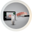

Do fluxo convencional ao digital - ampla gama de materiais e fluxos de
trabalho
Supere as expectativas dos seus pacientes com uma ampla variedade de
opções de componentes.

Fresagem, impressão, ou fabricação convencional com simplicidade em
todos os fluxos.
Bibliotecas protéticas disponíveis para os principais sistemas CAD/CAM
do mercado.